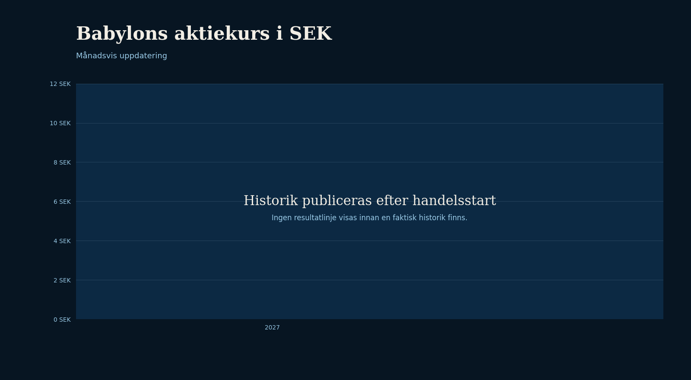
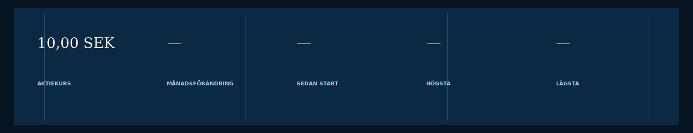
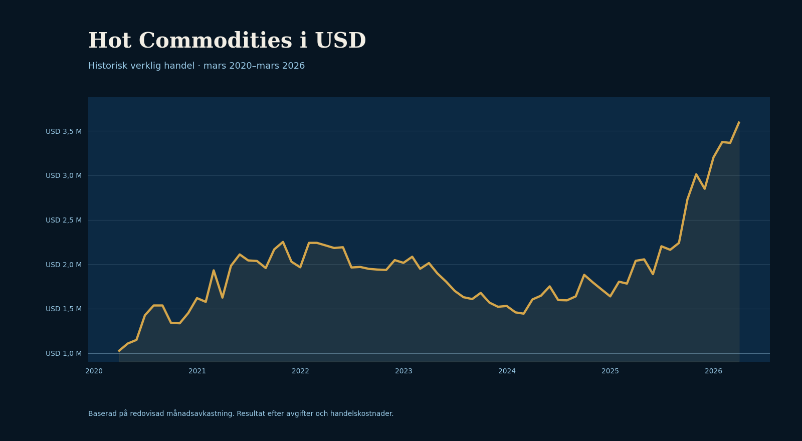
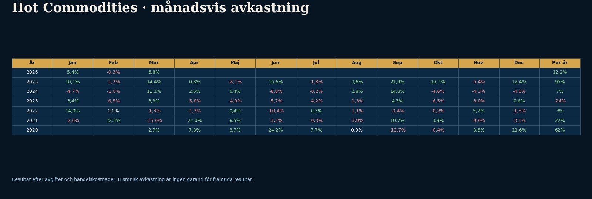
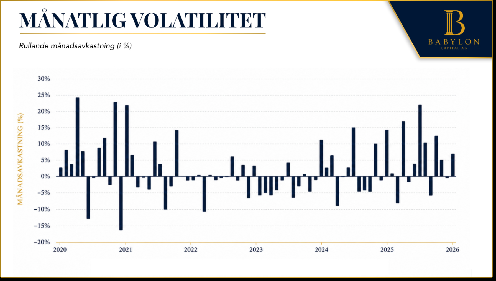
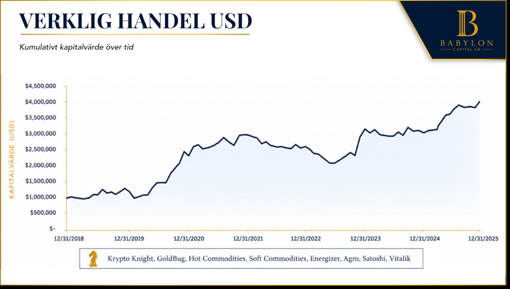
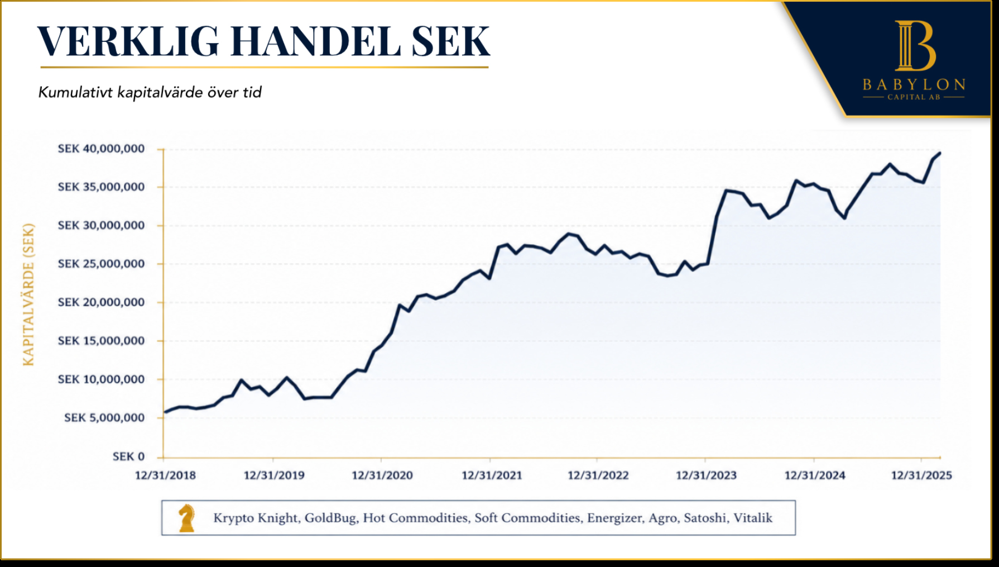

Resultat.
Sidan skiljer tydligt mellan Babylon Capitals egen aktiekurs och den historiska verkliga handel som ligger bakom utvecklingen av CTA-programmet Arkad.
Aktiekurs
Babylons aktiekurs i SEK
Primär redovisning

Babylons aktiekurs i USD
Kompletterande redovisningErfarenheterna från den verkliga handeln i Hot Commodities har varit en viktig grund i utvecklingen av Arkad.
Programmet har bedrivits med verklig handel sedan 2020 och följer systematiskt prisrörelser på ett brett urval av globala råvarumarknader.
Erfarenheterna från programmet har format arbetet med positionsstorlek, riskkontroll och hur en trendföljande modell hanterar skiftande marknadsmiljöer.
Resultaten nedan avser Hot Commodities och ska inte tolkas som historisk avkastning för Blue Babylon Capital eller Arkad.
Hot Commodities.
Den historiska serien visar hur programmet har utvecklats genom perioder av både starka trender och svagare marknadslägen.
SEK-kurvan är normaliserad till 10 MSEK och bygger på samma procentuella månadsutveckling som USD-serien. USD-serien visar den redovisade historiken med startvärde 1 MUSD.
Hot Commodities i SEK
Normaliserad serieHot Commodities i USD
Verklig handel
Månad för månad
Separat utbytbar PNG
Volatilitet är en del av trendföljningen.
Negativa månader på omkring 5–10 procent kan uppstå när tidigare orealiserade vinster lämnas tillbaka när marknaden konsoliderar eller byter riktning.
Det är en naturlig del av trendföljande handel och ofta nödvändigt för att kunna behålla positioner under längre och starkare trender. I kraftiga trendfaser kan volatiliteten i öppna positioner öka, vilket skapar större svängningar i månadsavkastningen innan trenden avslutas.

Diversifiering mellan marknader.
Hot Commodities är ett enskilt råvaruprogram. Genom att kombinera flera marknader och strategier kan negativa perioder ofta reduceras i både tid och storlek, samtidigt som avkastningsprofilen kan bli jämnare över tid.
Den bredare historiken omfattar bland annat Krypto Knight, GoldBug, Hot Commodities, Soft Commodities, Energizer, Agro, Satoshi och Vitalik. Kombinationen tillför exponering mot råvaror och kryptotillgångar genom flera separata program.
Diversifiering eliminerar inte risken. Perioder med betydande nedgångar är en naturlig del av systematisk och trendföljande handel.


Ett längre perspektiv på förvaltningen.
Henrik Hallenborg har ett track record som sträcker sig tillbaka till 2012. På Hallenborg CTA presenteras mer information om hans verksamhet, bakgrund och långsiktiga arbete med systematisk handel.
Läs mer på Hallenborg CTA →